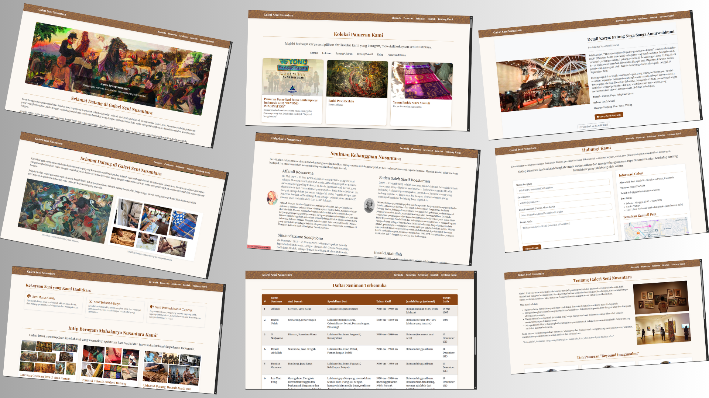

Proyek Terbaru

Website "GALERI SENI NUSANTARA"
Website ini adalah sebuah platform galeri seni online yang dibuat untuk memamerkan beragam karya seni dari Nusantara. Pengunjung dapat menjelajahi koleksi yang tersedia, melihat detail setiap karya, dan mendapatkan informasi lengkap tentang seniman atau latar belakangnya. Fokus utama website ini adalah sebagai ruang pamer virtual yang interaktif.